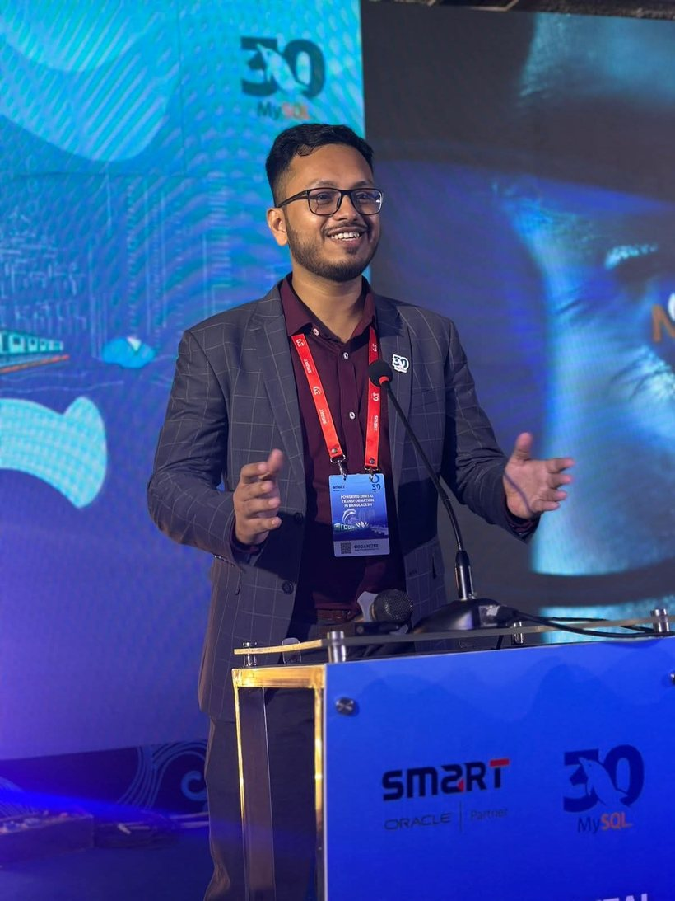

IT professional with hands-on experience deploying and supporting Oracle Cloud Infrastructure, Oracle Database 19c, and Linux environments for enterprise clients — and building toward running infrastructure independently.
I spent two and a half years at Smart Technologies (BD) Ltd, an Oracle partner in Bangladesh, working on cloud and database infrastructure for banking and pharmaceutical clients. That covered Oracle Database 19c with RAC and Active Data Guard, ExaCC and ODA engineered systems, backup and recovery, and IPSec VPN tunneling between OCI and on-premises data centers.
I did that work on live, high-stakes systems — core banking and pharmaceutical databases where downtime isn't an option — as part of the delivery team alongside senior engineers. Real migrations, real backups, real production stakes. It's given me a solid, practical grounding in how enterprise Oracle and OCI environments are built, secured, and kept running.
I'm currently a Trust & Safety Associate at Accenture Malaysia in Kuala Lumpur, while I move back toward cloud infrastructure and database work — the direction I want my career to go, with DevOps and cloud engineering as the longer goal.

Enterprise deployments I supported at Smart Technologies, in collaboration with the project teams.
Supported migration of the remittance application and Oracle DB 19c to OCI with minimal downtime; helped configure VCN, subnets, security lists, and IPSec VPN to the bank's on-prem data center; assisted with Autonomous Database and MySQL Database Service for HA and backup.
Assisted in migrating large-scale databases from on-prem to OCI for pharmaceutical workloads; configured OCI networking and IPSec VPN tunneling; supported compute, storage, and database performance optimization after migration.
Assisted in configuring the ODA including networking and NFS; supported migration of Oracle DB 11gR2 to 19c on PDB/CDB architecture; participated in ODA provisioning and post-deployment validation.
Supported deployment and configuration of Oracle AVDF to strengthen database security and compliance; assisted with audit policies, monitoring, and alerting across core banking databases; performed post-deployment validation and basic tuning.
An honest snapshot of my move toward DevOps — what I'm hands-on with now, and what's next. Staged, not exaggerated.
Building and running my own instances on OCI Always Free and AWS EC2 (Ubuntu) — day-to-day server administration, shell, users, services, and networking.
Early stage — learning images, containers, and basic isolation. Honestly at the beginning of this one, working up from the fundamentals.
Planned next steps as I work through my DevOps roadmap — not started yet, listed here so the direction is clear.
Open to Oracle DBA, Linux administration, and cloud infrastructure roles in Kuala Lumpur. The fastest way to reach me is email.